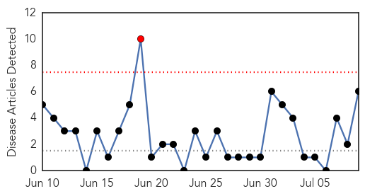
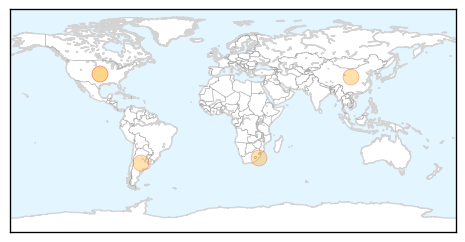

Mumps
30-Day Web Trend
0 alerts, 0 warnings
30-Day Twitter Trend
0 alerts, 0 warnings

Article Locations
Article Confidences

Top Articles:
Top Tweets:
-
No tweets found for Jul 09, 2015
Swine Flu
30-Day Web Trend
1 alerts, 0 warnings

30-Day Twitter Trend
1 alerts, 0 warnings
Article Locations
Article Confidences

Top Articles:
- 0.982
- Study Offers Clue To Link Between Swine Flu Shot, Narcolepsy
- 0.949
- Rare fever: Western Cape keeping a close watch
- 0.940
- Trinidad and Tobago News, Blogs, Videos, Forums and More!
- 0.837
- CDC Official Calls Obama Worst President, Amateur, Marxist After Influx of Illegal Alien Minors – The Absurd Report
- 0.752
- Why Did This CDC Official Blow Up At Obama?
- 0.642
- Migrant workers bringing in new diseases to Kerala
Top Tweets:
-
No tweets found for Jul 09, 2015